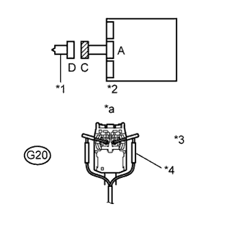
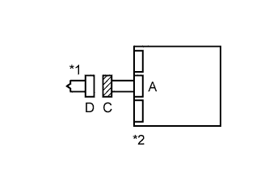
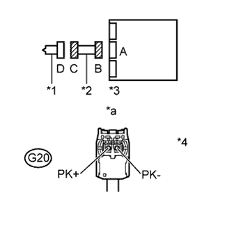
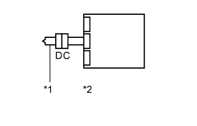

DTC B1865/65 Short in Front Passenger Side Knee Airbag Squib Circuit |
DTC B1866/65 Open in Front Passenger Side Knee Airbag Squib Circuit |
DTC B1867/65 Short to GND in Front Passenger Side Knee Airbag Squib Circuit |
DTC B1868/65 Short to B+ in Front Passenger Side Knee Airbag Squib Circuit |
| DTC Code | DTC Detection Condition | Trouble Area |
| B1865/65 | One of the following conditions is met:
|
|
| B1866/65 | One of the following conditions is met:
|
|
| B1867/65 | One of the following conditions is met:
|
|
| B1868/65 | One of the following conditions is met:
|
|
| Condition | Waiting Time |
| Vehicle enrolled in G-BOOK system | 6 minutes |
| Vehicle not enrolled in G-BOOK system | 1 minute |
| 1.CHECK LOWER NO. 2 INSTRUMENT PANEL AIRBAG (FRONT PASSENGER SIDE KNEE SQUIB) |
|  |
Turn the engine switch off.
Disconnect the cable from the negative (-) battery terminal, and wait for at least 90 seconds.
Disconnect the connector from the lower No. 2 instrument panel airbag.
Connect the white wire side of SST (resistance: 2.1 Ω) to connector C.
Connect the cable to the negative (-) battery terminal, and wait for at least 2 seconds.
Turn the engine switch on (IG), and wait for at least 60 seconds.
Clear the DTCs (Click here).
Turn the engine switch off.
Turn the engine switch on (IG), and wait for at least 60 seconds.
Check for DTCs (Click here).
| *1 | Front Passenger Side Knee Squib |
| *2 | Center Airbag Sensor |
| *3 | Connector C |
| *4 | SST |
| *a | Front view of wire harness connector (to Front Passenger Side Knee Squib) |
|
| ||||
| OK | ||
| ||
| 2.CHECK CONNECTOR |
Turn the engine switch off.
Disconnect the cable from the negative (-) battery terminal, and wait for at least 90 seconds.
Disconnect SST from connector C.
|  |
Check that the instrument panel wire connector (on the lower No. 2 instrument panel airbag side) is not damaged.
| *1 | Front Passenger Side Knee Squib |
| *2 | Center Airbag Sensor |
|
| ||||
| OK | |
| 3.CHECK INSTRUMENT PANEL WIRE (FRONT PASSENGER SIDE KNEE SQUIB CIRCUIT) |
|  |
Disconnect the connectors from center airbag sensor.
Connect the cable to the negative (-) battery terminal, and wait for at least 2 seconds.
Measure the voltage according to the value(s) in the table below.
| Tester Connection | Switch Condition | Specified Condition |
| G20-1 (PK+) - Body ground | Engine switch on (IG) | Below 1 V |
| G20-2 (PK-) - Body ground | Engine switch on (IG) | Below 1 V |
Turn the engine switch off.
Disconnect the cable from the negative (-) battery terminal, and wait for at least 90 seconds.
Measure the resistance according to the value(s) in the table below.
| Tester Connection | Condition | Specified Condition |
| G20-1 (PK+) - G20-2 (PK-) | Always | Below 1 Ω |
Release the activation prevention mechanism built into connector B (Click here).
Measure the resistance according to the value(s) in the table below.
| Tester Connection | Condition | Specified Condition |
| G20-1 (PK+) - G20-2 (PK-) | Always | 1 MΩ or higher |
| G20-1 (PK+) - Body ground | Always | 1 MΩ or higher |
| G20-2 (PK-) - Body ground | Always | 1 MΩ or higher |
| *1 | Front Passenger Side Knee Squib |
| *2 | Instrument Panel Wire |
| *3 | Center Airbag Sensor |
| *4 | Connector C |
| *a | Front view of wire harness connector (to Front Passenger Side Knee Squib) |
|
| ||||
| OK | |
| 4.CHECK CENTER AIRBAG SENSOR |
|  |
Connect the connectors to the lower No. 2 instrument panel airbag and the center airbag sensor.
Connect the cable to the negative (-) battery terminal, and wait for at least 2 seconds.
Turn the engine switch on (IG), and wait for at least 60 seconds.
Clear the DTCs (Click here).
Turn the engine switch off.
Turn the engine switch on (IG), and wait for at least 60 seconds.
Check for DTCs (Click here).
| *1 | Front Passenger Side Knee Squib |
| *2 | Center Airbag Sensor |
|
| ||||
| OK | ||
| ||